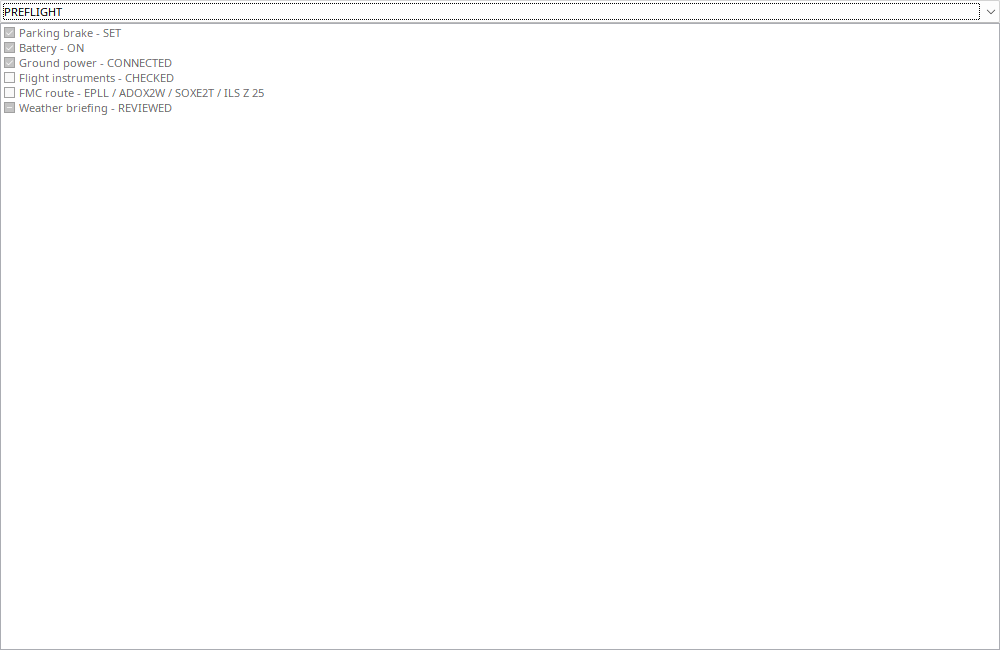

La pestaña Listas de comprobación muestra las listas que expone el simulador mediante MSFS24-FDR-Bridge opcional. Es una vista de solo lectura; no ejecuta ni reinicia listas en la cabina.
| Opción / acción | Funcionamiento y limitaciones |
|---|---|
| Selección | Elija una lista en el desplegable superior. Debajo aparecen sus elementos, ajustes esperados y estados disponibles. |
| Estado | Marcado significa completado según el simulador. Una casilla vacía indica un estado pendiente registrado; gris indica estado desconocido. La ausencia de datos no demuestra que no se haya realizado un procedimiento. |
| Reproducción | Los cambios se guardan con el tiempo de la grabación. Al desplazarse se recupera el último estado conocido, sin adelantar estados futuros. La lista seleccionada manualmente se conserva mientras exista. |
| Disponibilidad | El bridge debe estar activo durante la grabación. Las listas propias de algunos complementos pueden no estar disponibles mediante el listener nativo. Las grabaciones antiguas sin estos datos muestran un aviso. |
| Ventana | La pestaña puede separarse y acoplarse como las demás. Seleccionar o recorrer una lista no envía órdenes al avión. |
